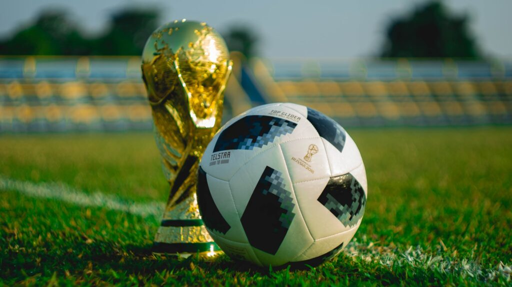

WK: De FIFA World Cup (Engels: FIFA World Cup, Frans: Coupe du monde de la FIFA), algemeen bekend als de FIFA World Cup of de World Cup, is een vierjarig evenement tussen de herenteams van de FIFA-landen. Naast het gastland gaan er uiteindelijk 31 nationale teams door naar de finale via de kwalificaties op het vasteland. Op 10 januari 2017 werd besloten het WK uit te breiden van 2026 naar 48 landen. Tot het WK 2002 plaatste de titelverdediger (toen nog Frankrijk) zich ook automatisch voor de competitie, maar sindsdien moet het nationale team zich ook plaatsen voor de finale. Het toernooi, inclusief de voorrondes, staat volledig onder toezicht van de World Football Association FIFA, maar wordt georganiseerd door de Intercontinental Association.
